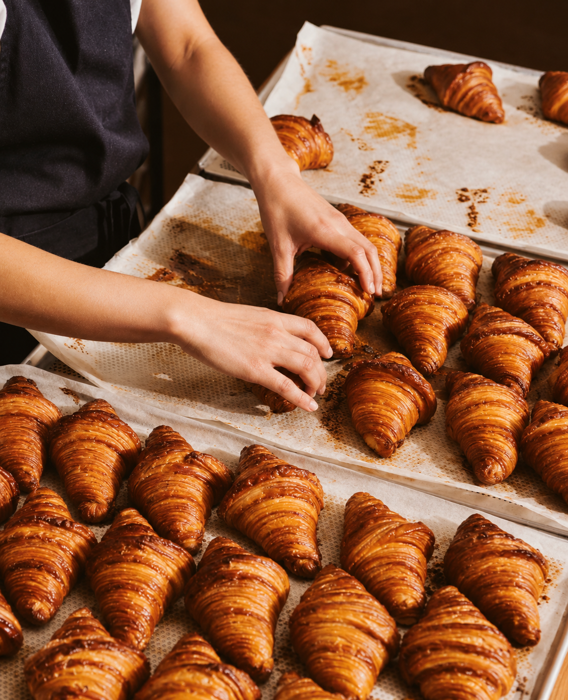
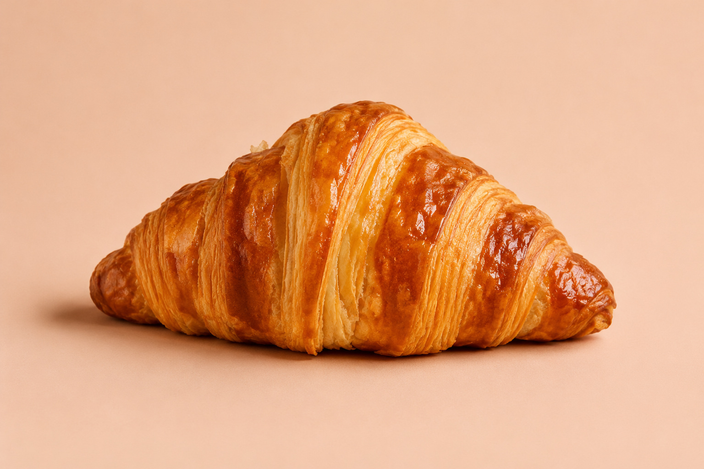
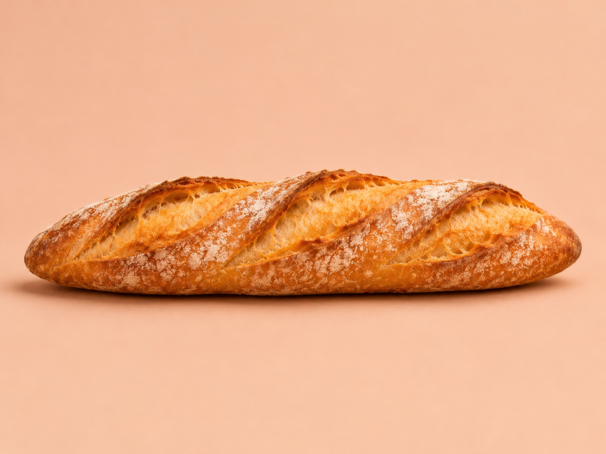
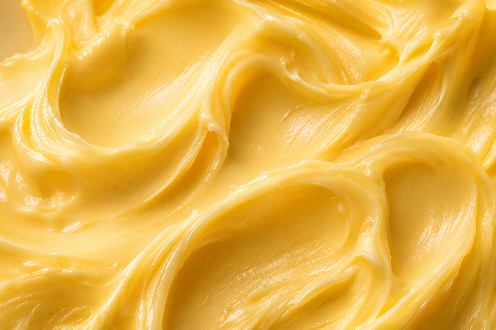
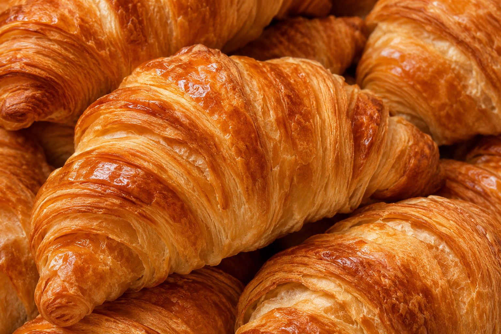

Miga & Harina


Convertimos mantequilla, harina y un poco de paciencia en pastelería perfecta. Hojaldrada, dorada y deliciosamente imperfecta: cada bocado es un pequeño experimento de felicidad.
Convertimos mantequilla, harina y un poco de paciencia en pastelería perfecta. Hojaldrada, dorada y deliciosamente imperfecta: cada bocado es un pequeño experimento de felicidad.

Cada madrugada encendemos el horno antes de que salga el sol. Trabajamos con masa madre, mantequilla de verdad y fermentaciones lentas de hasta 48 horas, porque el buen pan no se apura.
Nada de atajos ni mezclas industriales: solo manos, tiempo y harina. Por eso cada pieza sale un poco distinta, y por eso sabe tan bien.

Hojaldre de 27 capas, crujiente por fuera y tierno por dentro.

Dos barras de chocolate oscuro envueltas en mantequilla.

Corteza dorada y miga alveolada, horneada cada tarde.
Canela, azúcar morena y un glaseado que se derrite.


Pasa por la panadería o reserva tu caja con anticipación. Horneamos de martes a domingo, desde las 7:00 a.m., hasta que se acabe el último croissant.
Ver menú